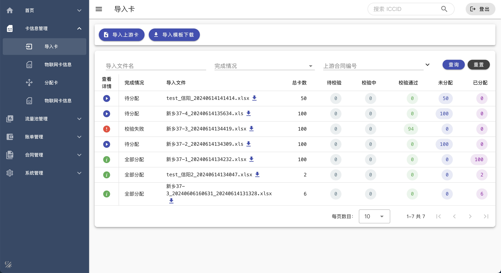

I wrote this website myself, so it's also part of my portfolio :)
You can click on image to zoom in.
A. Installation - Caper Fire "雀跃之火"
1. Introduction
In order to increase the immersion of people listening to music, so
that music for people to bring more pleasant experience, we decided to
carry out the "Caper Fire" music flame rhythm system project plan. The
sound acquisition device of the system can collect the ambient sound
signal or the input sound media signal, and the system controls the
height of the flame generated in the flame device according to the
volume and spectrum of the collected sound signal, which increases the
user's immersion in music. At the same time, led light arrays outside
the flame unit will display a spectrum map of the visual sound signal
in real time to optimize the user experience.
2. Images & Video
3. Parts of Work
I'm responsible for coding in this work. I wrote the code to complete
the following tasks:
-
Drive hardware
By defining pins, reading and outputting voltage changes, I
successfully achieved sound information reading from the microphone,
controlling servo rotation, and controlling LED light changes
-
Perform filtering on microphone data collection
Due to microphone quality issues, there is a lot of noise in the
collected sound data. I used a filtering algorithm to filter out the
noise and obtained higher quality sound information
-
Perform FFT calculations on sound data
By performing FFT (Fast Fourier Transform) on sound data, I obtained
frequency domain data, which I can then discretize and display on
LED matrix light board
4. Processes & Design Thinking
-
I took inspiration from the Fire Dragon Scroll and wanted to create
a device that can control flames
-
I discussed the feasibility with the group members and decided to
combine this flame control device with sound and melody to form a
flame atmosphere lighting fixture that provides feedback based on
environmental sound. The goal is to install it in places such as
restaurants
-
We collected people's attitudes through distributing survey
questionnaires and found that everyone agrees with this
-
Under the guidance of our teacher, we created this device through
methods such as researching materials and conducting experiments
B. Website - IoT Traffic Manage Platform "物联网连接管理平台"
1. Introduction
This is a project I wrote in the company, mainly responsible for
managing and distributing the network traffic of IoT (Internet of
Things) devices. It is a management platform used internally by the
company and customers.
2. Images

3. Parts of Work
I'm responsible for all forntend coding in this work.
-
UI & UX:
I am responsible for controlling the style and details of the page
to ensure the customer's interaction experience, for example
-
Design the color system for the entire platform and provide dark
modes
-
Add appropriate icons in appropriate locations to prompt users
-
Provide feedback to users through toast on successful or failed
execution
-
Automatically refresh table data after executing commands to
avoid user confusion
-
Project Building:
I started building the entire frontend project based on Vue and
achieved
- 'Pinia' for state management
- 'Vue Router' for routing management
- 'Vuetify' for component library
- 'Axios' for network request (encapsulated as API class)
- 'Eslint' for code quality inspection
- 'Prettier' for code formatting
- ...
-
Code implementation:
I am responsible for writing all frontend code, and during this
process, I have fully honed my frontend coding skills, familiarized
myself with many technologies including HTML, CSS, JS, Vue, and more